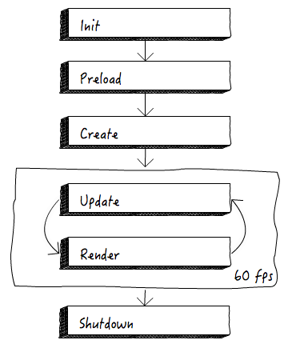

An introduction
to HTML5 game development
Belén Albeza
I. Web tech
Why HTML5 for games?
- The power of an URL
- Because we can
HTML5 tech to support games
- Drawing API's: Canvas (2D) and WebGL (3D)
- Input: keyboard, mouse, touch, gyroscope, etc.
- Web Audio API
- Reliable timing:
requestAnimationFrame - WebAssembly, WebVR, etc.
How?
- Code in JavaScript and directly use these API's (maybe with the aid of libraries)
- Use a multi-platform engine that supports exporting to HTML5
Engines
- 3D
- Unity (C#)
- Unreal (C++)
- 2D
- Game Maker (custom language)
- PICO-8 (Lua)
JS engines/libraries
- 2D
- Phaser
- Pixi (drawing only)
- 3D
- Babylon.js
- PlayCanvas Engine
- THREE.js (drawing only)
II. Game development concepts
Basic structures
FSM
-
- Ultra-versatile: game states, AI, etc.
- Easy to implement (
switch/polymorphism)
The game loop
-
- Ideally render frames 60 times per second (60 fps)
- Two steps each frame: update and render
Game states (I)
-
- Each state represents a "screen" in the game (the main menu, a level…)
- They might be in a stack (for "modal" states) or in a FSM
Game states (II)
-
- States might have a FSM in the inside to handle the different stages
- 
Sprites
Sprites
-
- Images with movement/behaviour
- They can intereact between them (i.e. a bullet destroying an enemy alien)
- They can be animated
Keyframe-based animations
-
- frame-by-frame: a different picture is used for every part of the animation
- There is no interpolation
- Usually stored in spritesheets for performance
Skeletal animation
-
- "South Park"-like
- A sprite is decomposed into parts that are rotated, moved, etc.
- There is interpolation
- More smooth… but may look odd if not combined with keyframes

Entities and the game world
-
- Entities: sprites, UI elements, particle systems, texts, etc.
- They can be organised in a tree structure that represents the game world
- If a tree, hierarchical relationships can be useful for handling entities relatively to a parent
Sprite pools and recycling (I)
-
- It's useful to group similar sprites in lists (f.ex: to check collisions between all the lasers and all the enemies)
- Pools can be considered (or not) entities.
Sprite pools and recycling (II)
-
- The problem: performance issues when creating and releasing sprites
- Solution: don't release sprites, mark them as "zombies" and re-use them

Physics
Old-school physics
-
- Classical mechanics equations
- Relatively fast and easy to implement
- Need the delta time
Physics engine
-
- Very powerful and with interesting features
- Support for solid bodies, joints, ropes, etc.
- They map game entities to physical bodies
- Easy to use, but hard to fine-tune
Collision detection
Pixel-perfect
-
- On a 2D graphic environment
- Precise… at the expense of performance
Bounding boxes
-
- Wrap the sprites in rects or circles and check for intersections
- The fastest method
- Trivial to implement
- Variants to support rotations: OBB, AABB

Polygon-based
-
- Separating Axis Theorem
- Most physics engines use this method
- Convex polygons only!
World and levels
Scroll
-
- Your level can be bigger than the screen
- Parallax effect (layers moving at different speed)
- Camera to follow a character
Grids
-
- Map your world/level into a logical grid
- Grids are usually square, but can be rects, hexagons…
- Easy to perform checks and implement the game logic

Tiles
-
- Build up your world's graphics from tiny pieces (tiles)
- Widely used in classic games
- Can be easily mapped into a logical grid
Rendering
A 2D scene with 3D graphics
-
- Why? Performance
- The trick: orthogonal perspective
- Graphics are rendered as textures into quads

Particles
-
- Very cool to create effects: explosions, smoke, halos, etc.
- Can be as tiny as 1 pixel… (in classic games)
- …or made up of tiny polygons (3D games)

Bitmap fonts
-
- Store the characters of a font in a spritesheet
- Easy to implement if monospaced
Thanks!
Questions?